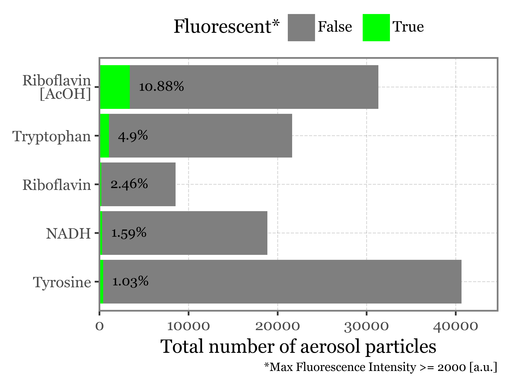
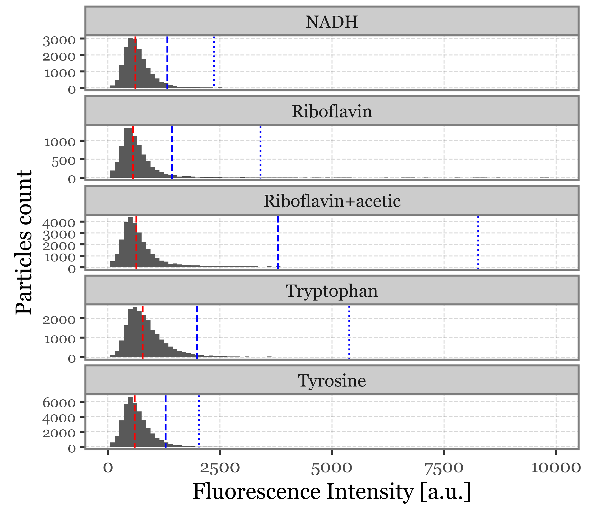
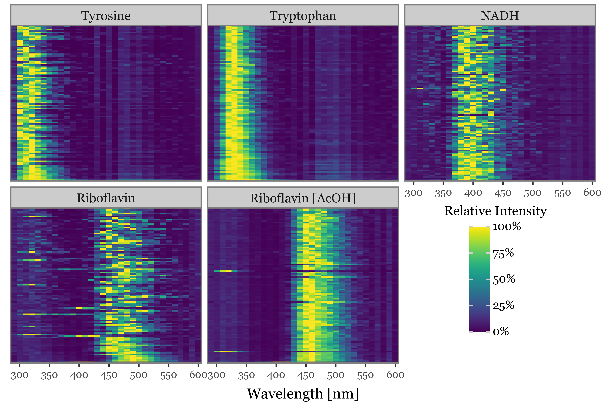
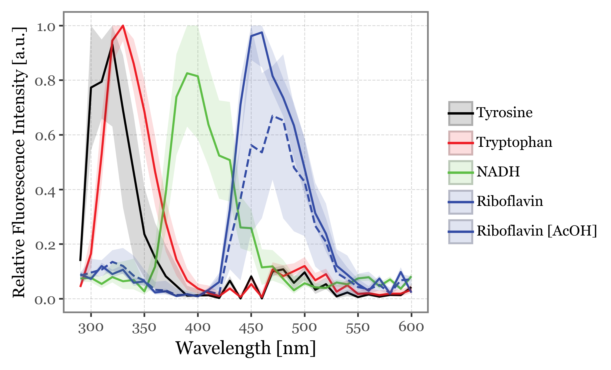
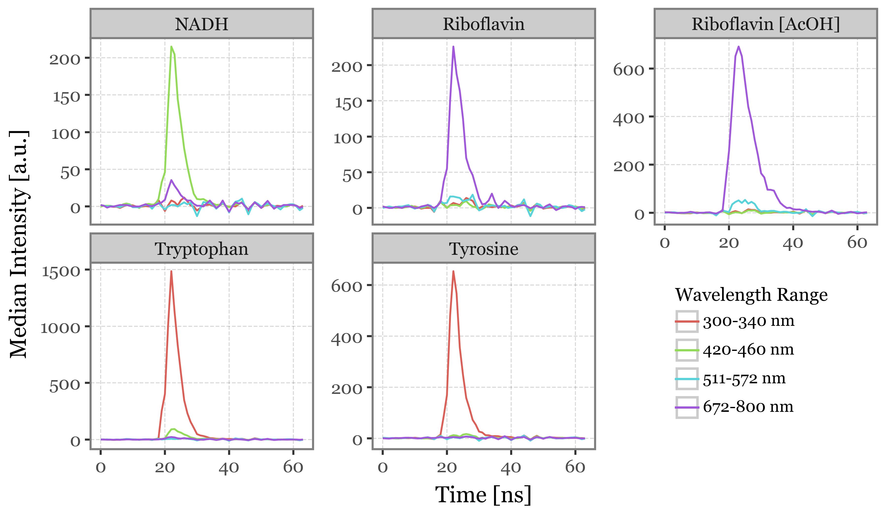

![]()
import os
import sys
import bz2
import pickleDetecting aerosolized fluorophores with Rapid-E
Classifying bacterial-enriched bioaerosols with Rapid-E and ML
Preamble
Imports
sys.path.append('..')
sys.path.append('../../aerosolpy')import numpy as np
import pandas as pd
import seaborn as sns
import plotnine as p9
import matplotlib.pyplot as plt
from glob import glob
from tqdm.auto import tqdm
from functools import partial
from collections import defaultdict
from mizani.breaks import date_breaks
from mizani.formatters import date_format, percent_format
from scipy.cluster.hierarchy import dendrogram, linkage, fcluster
from sklearn.decomposition import PCA
from sklearn.preprocessing import StandardScaler
from sklearn.pipeline import make_pipeline
from aerosolpy.conversion import Conversion
from aerosolpy.particles import AerosolParticlesData, ParticleData
from aerosolpy.particles import (CORRECTED_SPECTRAL_WAVELENGTHS,
WAVELENGTH_LIFETIME_RANGES,
SCATTERING_ANGLES)Config
# Matplotlib settings
from matplotlib_inline.backend_inline import set_matplotlib_formats
plt.rcParams['font.family'] = 'Georgia'
plt.rcParams['svg.fonttype'] = 'none'
set_matplotlib_formats('retina')
plt.rcParams['figure.dpi'] = 300
# Plotnine settings (for figures)
p9.options.set_option('base_family', 'Georgia')
p9.theme_set(
p9.theme_bw()
+ p9.theme(panel_grid=p9.element_blank(),
legend_background=p9.element_blank(),
panel_grid_major=p9.element_line(size=.5, linetype='dashed',
alpha=.15, color='black'),
dpi=300
)
)Loading Data
for folder in glob('../data/fluorophores/*'):
fluorophore = os.path.basename(folder)
if os.path.exists(f'{folder}/particles.pickle.bz2'):
continue
else:
for filename in glob(f'{folder}/*.zip'):
converter = Conversion(filename, mode='user', keep_threshold=True, keep_zip=True)
converter.save_overall()
particles = AerosolParticlesData.from_folder(folder)
with bz2.BZ2File(f'{folder}/particles.pickle.bz2', 'w') as fh:
pickle.dump(particles, fh)particles_dict = {}
for folder in glob('../data/fluorophores/*'):
fluorophore = os.path.basename(folder)
with bz2.BZ2File(f'{folder}/particles.pickle.bz2', 'r') as fh:
particles = pickle.load(fh)
particles_dict[fluorophore] = particlessummary_df = []
for fluorophore, particles in particles_dict.items():
summary_df.append(particles.summary_df.assign(fluorophore=fluorophore))
summary_df = pd.concat(summary_df)(summary_df
.replace({'fluorophore': {'Riboflavin+acetic': 'Riboflavin\n[AcOH]'}})
.assign(fluorescent=lambda dd: dd['intensity'] >= 2000)
.groupby(['fluorophore'])
.size()
.rename('count')
.sort_values(ascending=False)
.apply(lambda x: int(round(x / 10)))
)fluorophore
Tyrosine 4064
Riboflavin\n[AcOH] 3132
Tryptophan 2162
NADH 1885
Riboflavin 853
Name: count, dtype: int64f = (summary_df
.replace({'fluorophore': {'Riboflavin+acetic': 'Riboflavin\n[AcOH]'}})
.assign(fluorescent=lambda dd: dd['intensity'] >= 2000)
.groupby(['fluorophore', 'fluorescent'])
.size()
.rename('count')
.reset_index()
.assign(percentages=lambda dd: dd.groupby('fluorophore')['count'].transform(lambda x: x / x.sum() * 100).round(2))
.assign(fluorophore=lambda dd: pd.Categorical(dd['fluorophore'], categories=dd.query('fluorescent').sort_values('percentages')['fluorophore']))
.pipe(lambda dd: p9.ggplot(dd)
+ p9.aes(x='fluorophore', y='count', fill='fluorescent')
+ p9.geom_col()
+ p9.coord_flip()
+ p9.geom_text(p9.aes(label='percentages.astype(str) + "%"'),
nudge_y=1000, size=8, ha='left',
data=dd.query('fluorescent'))
+ p9.scale_y_continuous(expand=(0, 0, .1, 0))
+ p9.scale_fill_manual(values=[None, '#00FF00'])
+ p9.labs(x='', y='Total number of aerosol particles', fill='Fluorescent*',
caption='*Max Fluorescence Intensity >= 2000 [a.u.]')
+ p9.theme(figure_size=(4, 3), legend_position='top',
plot_caption=p9.element_text(size=7))
)
)
f.save('../output/figures/fluorophores_fluorescent_counts.svg')
f.draw()
intensity_stats = (summary_df
.groupby('fluorophore')
.agg(mean=('intensity', 'mean'),
median=('intensity', 'median'),
q95=('intensity', lambda x: np.percentile(x, 95)),
q99=('intensity', lambda x: np.percentile(x, 99)))
.reset_index()
)
intensity_stats| fluorophore | mean | median | q95 | q99 | |
|---|---|---|---|---|---|
| 0 | NADH | 694.887509 | 610.0 | 1324.0 | 2360.35 |
| 1 | Riboflavin | 703.847867 | 557.0 | 1425.0 | 3403.46 |
| 2 | Riboflavin+acetic | 1089.236964 | 634.0 | 3793.4 | 8261.40 |
| 3 | Tryptophan | 998.281373 | 772.0 | 1983.0 | 5381.74 |
| 4 | Tyrosine | 676.762471 | 592.0 | 1284.0 | 2028.30 |
f = (summary_df
.assign(intensity=lambda dd: dd.intensity.astype(int))
.pipe(lambda dd: p9.ggplot(dd)
+ p9.geom_histogram(p9.aes(x='intensity'), binwidth=100)
+ p9.facet_wrap('fluorophore', ncol=1, scales='free_y')
+ p9.geom_vline(p9.aes(xintercept='median'), color='red', linetype='dashed',
data=intensity_stats)
+ p9.geom_vline(p9.aes(xintercept='q95'), color='blue', linetype='dashed',
data=intensity_stats)
+ p9.geom_vline(p9.aes(xintercept='q99'), color='blue', linetype='dotted',
data=intensity_stats)
+ p9.labs(x='Fluorescence Intensity [a.u.]', y='Particles count')
+ p9.scale_x_continuous(limits=(0, 10000))
+ p9.theme(figure_size=(4, 3.5),
axis_text_y=p9.element_text(size=7))
)
)
f.save('../output/figures/fluorescence_intensity_histograms.svg')
f.draw()
particles_dict['Tyrosine'].filter('intensity > 3000')Filtering particles with query: intensity > 3000Collection of 179 aerosol particles measured from 2021-01-27 15:44:02 to 2021-01-27 15:53:58.fluo_particles_dict = {}
for fluorophore, particles in particles_dict.items():
fluo_particles_dict[fluorophore] = particles.filter('intensity >= 2000')Filtering particles with query: intensity >= 2000
Filtering particles with query: intensity >= 2000
Filtering particles with query: intensity >= 2000
Filtering particles with query: intensity >= 2000
Filtering particles with query: intensity >= 2000super_fluo_particles_dict = {}
for fluorophore, particles in particles_dict.items():
super_fluo_particles_dict[fluorophore] = particles.filter('intensity >= 2500')Filtering particles with query: intensity >= 2500
Filtering particles with query: intensity >= 2500
Filtering particles with query: intensity >= 2500
Filtering particles with query: intensity >= 2500
Filtering particles with query: intensity >= 2500spectra_df = []
for fluorophore in super_fluo_particles_dict:
for i, particle in enumerate(super_fluo_particles_dict[fluorophore]):
spectra_df.append(particle.spectrum_time_matrix.sum(axis=1)
.rename('intensity')
.reset_index()
.assign(relative_intensity=lambda dd: dd['intensity'] / dd['intensity'].max())
.assign(fluorophore=fluorophore)
.assign(particle_index=i)
.assign(max_intensity=lambda dd: dd['intensity'].max())
)
spectra_df = pd.concat(spectra_df)n = 100
selected_particles = (spectra_df
.groupby('fluorophore')
.apply(lambda dd: dd[['particle_index', 'max_intensity']].drop_duplicates()
.sort_values('max_intensity', ascending=False)
.head(n).assign(new_index=range(n)))
.reset_index()
[['fluorophore', 'particle_index', 'new_index']]
)
f = (spectra_df
.merge(selected_particles, on=['fluorophore', 'particle_index'])
.replace('Riboflavin+acetic', 'Riboflavin [AcOH]')
.assign(fluorophore=lambda dd: pd.Categorical(dd['fluorophore'], categories= [
'Tyrosine', 'Tryptophan', 'NADH', 'Riboflavin', 'Riboflavin [AcOH]'
]))
.pipe(lambda dd: p9.ggplot(dd)
+ p9.aes(x='wavelength', y='new_index')
+ p9.geom_tile(p9.aes(fill='relative_intensity'))
+ p9.scale_x_continuous(expand=(0, 0), breaks=range(300, 601, 50))
+ p9.scale_y_continuous(expand=(0, 0))
+ p9.scale_fill_cmap('viridis', labels=percent_format())
+ p9.facet_wrap('fluorophore')
+ p9.labs(x='Wavelength [nm]', fill='Relative Intensity')
+ p9.theme(axis_text_y=p9.element_blank(),
axis_title_y=p9.element_blank(),
axis_ticks_major_y=p9.element_blank(),
legend_position=(.9, .125),
legend_key_size=10,
legend_text=p9.element_text(size=8),
legend_title=p9.element_text(size=9, ha='center'),
axis_title_x=p9.element_text(size=10, va='top'),
axis_text_x=p9.element_text(size=7),
figure_size=(6, 4),
plot_margin=.03
)
)
)
f.save('../output/figures/fluorophores_fluorescence_spectra.svg')
f.draw()
f = (spectra_df
.merge(selected_particles, on=['fluorophore', 'particle_index'])
.replace('Riboflavin+acetic', 'Riboflavin [AcOH]')
.assign(fluorophore=lambda dd: pd.Categorical(dd['fluorophore'], categories= [
'Tyrosine', 'Tryptophan', 'NADH', 'Riboflavin', 'Riboflavin [AcOH]'
]))
.pipe(lambda dd: p9.ggplot(dd)
+ p9.aes(x='wavelength', y='relative_intensity')
+ p9.scale_color_manual(['black', '#EE1E26', '#5EBE46', '#344CA5', "#344CA5"])
+ p9.scale_fill_manual(['black', '#EE1E26', '#5EBE46', '#344CA5', "#344CA5"])
+ p9.scale_x_continuous(breaks=range(300, 601, 50))
+ p9.scale_y_continuous(breaks=[0, .2, .4, .6, .8, 1])
+ p9.labs(y='Relative Fluorescence Intensity [a.u.]', x='Wavelength [nm]', color='', fill='')
+ p9.stat_summary(geom='line', size=.7, fun_y=np.median, mapping=p9.aes(color='fluorophore', linetype='fluorophore=="Riboflavin"'))
+ p9.stat_summary(fun_ymax=lambda x: x.quantile(.75),
fun_ymin=lambda x: x.quantile(.25),
geom='ribbon', alpha=.15, mapping=p9.aes(fill='fluorophore'))
+ p9.guides(linetype=False)
+ p9.theme(figure_size=(5, 3),
axis_title_y=p9.element_text(size=10),
)
)
)
f.save('../output/figures/fluorophores_fluorescence_spectra_median.svg')
f.draw()
lifetimes = []
for fluorophore, particles in super_fluo_particles_dict.items():
selected_idxs = selected_particles.query('fluorophore == @fluorophore')['particle_index']
for i in selected_idxs:
particle = particles[i]
lifetimes.append(particle.lifetime
.assign(fluorophore=fluorophore)
.assign(particle_index=i)
)
lifetimes = pd.concat(lifetimes)lifetime_stats = (lifetimes
.replace({'350-400 nm': '300-340 nm'})
.groupby(['fluorophore', 'time', 'wavelength_range'], as_index=False)
.agg(
median=('intensity', 'median'),
q05=('intensity', lambda x: x.quantile(.05)),
q25=('intensity', lambda x: x.quantile(.25)),
q75=('intensity', lambda x: x.quantile(.75)),
q95=('intensity', lambda x: x.quantile(.95)),
)
)(lifetime_stats
.replace('Riboflavin+acetic', 'Riboflavin [AcOH]')
.pipe(lambda dd: p9.ggplot(dd)
+ p9.aes(x='time', y='median', color='wavelength_range')
+ p9.geom_line()
+ p9.facet_wrap('fluorophore', ncol=3, scales='free_y')
+ p9.labs(x='Time [ns]', y='Median Intensity [a.u.]', color='Wavelength Range')
+ p9.theme(
legend_position=(.925, .1),
figure_size=(6, 3.5),
legend_title=p9.element_text(size=9),
legend_text=p9.element_text(size=8),
legend_key_size=12,
)
)
)